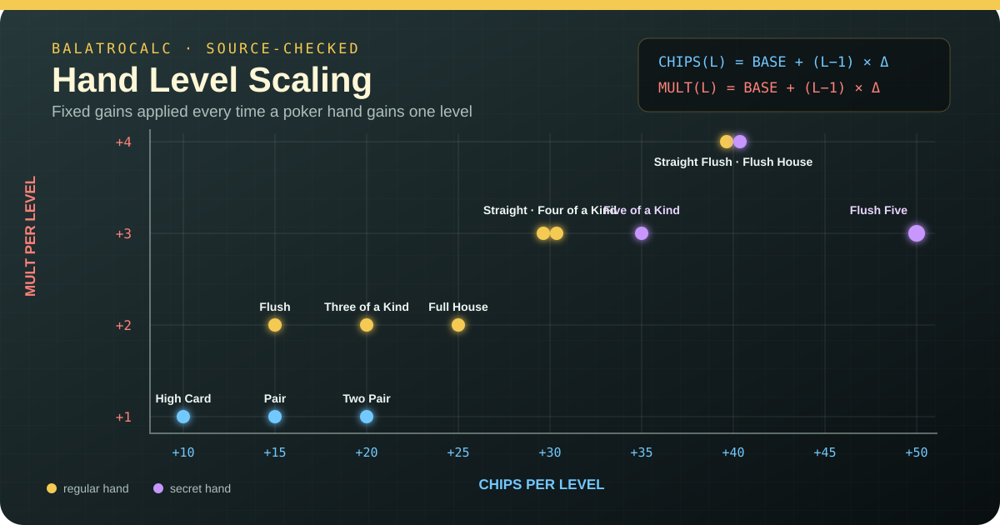

Example: Level 10 Straight
30 + 9 × 30 = 300 Chips
4 + 9 × 3 = 31 Mult
Source-checked poker hand data
Every poker hand has its own level. Raising it adds a fixed amount of base Chips and base Mult—independently from every other hand. Pick a level to compare all 12 regular and secret hands.
No level cap in the game source. L50 is a shortcut, not the maximum; enter any whole-number level of 1 or higher.
| Poker hand | Planet | Chips | Mult | Base score | Per level |
|---|---|---|---|---|---|
| Flush Five secretFive cards, same rank and suit | Eris | 160 | 16 | 2,560 | +50 / +3 |
| Flush House secretFull House, all one suit | Ceres | 140 | 14 | 1,960 | +40 / +4 |
| Five of a Kind secretFive cards of one rank | Planet X | 120 | 12 | 1,440 | +35 / +3 |
| Straight FlushStraight, all one suit | Neptune | 100 | 8 | 800 | +40 / +4 |
| Four of a KindFour cards of one rank | Mars | 60 | 7 | 420 | +30 / +3 |
| Full HouseThree of a Kind plus Pair | Earth | 40 | 4 | 160 | +25 / +2 |
| FlushFive cards of one suit | Jupiter | 35 | 4 | 140 | +15 / +2 |
| StraightFive consecutive ranks | Saturn | 30 | 4 | 120 | +30 / +3 |
| Three of a KindThree cards of one rank | Venus | 30 | 3 | 90 | +20 / +2 |
| Two PairTwo different Pairs | Uranus | 20 | 2 | 40 | +20 / +1 |
| PairTwo cards of one rank | Mercury | 10 | 2 | 20 | +15 / +1 |
| High CardHighest scoring card | Pluto | 5 | 1 | 5 | +10 / +1 |
Base score is the chart's Chips × Mult only. Your played card ranks, enhancements, editions, Jokers, vouchers, and other effects are added during actual scoring. Use the Balatro Calculator for a complete hand score.
Static reference
Open any hand to see every base Chips × Mult value from Level 1 through Level 15. Level 15 is a useful chart range, not a game maximum.
L1 160 × 16L2 210 × 19L3 260 × 22L4 310 × 25L5 360 × 28L6 410 × 31L7 460 × 34L8 510 × 37L9 560 × 40L10 610 × 43L11 660 × 46L12 710 × 49L13 760 × 52L14 810 × 55L15 860 × 58
L1 140 × 14L2 180 × 18L3 220 × 22L4 260 × 26L5 300 × 30L6 340 × 34L7 380 × 38L8 420 × 42L9 460 × 46L10 500 × 50L11 540 × 54L12 580 × 58L13 620 × 62L14 660 × 66L15 700 × 70
L1 120 × 12L2 155 × 15L3 190 × 18L4 225 × 21L5 260 × 24L6 295 × 27L7 330 × 30L8 365 × 33L9 400 × 36L10 435 × 39L11 470 × 42L12 505 × 45L13 540 × 48L14 575 × 51L15 610 × 54
L1 100 × 8L2 140 × 12L3 180 × 16L4 220 × 20L5 260 × 24L6 300 × 28L7 340 × 32L8 380 × 36L9 420 × 40L10 460 × 44L11 500 × 48L12 540 × 52L13 580 × 56L14 620 × 60L15 660 × 64
L1 60 × 7L2 90 × 10L3 120 × 13L4 150 × 16L5 180 × 19L6 210 × 22L7 240 × 25L8 270 × 28L9 300 × 31L10 330 × 34L11 360 × 37L12 390 × 40L13 420 × 43L14 450 × 46L15 480 × 49
L1 40 × 4L2 65 × 6L3 90 × 8L4 115 × 10L5 140 × 12L6 165 × 14L7 190 × 16L8 215 × 18L9 240 × 20L10 265 × 22L11 290 × 24L12 315 × 26L13 340 × 28L14 365 × 30L15 390 × 32
L1 35 × 4L2 50 × 6L3 65 × 8L4 80 × 10L5 95 × 12L6 110 × 14L7 125 × 16L8 140 × 18L9 155 × 20L10 170 × 22L11 185 × 24L12 200 × 26L13 215 × 28L14 230 × 30L15 245 × 32
L1 30 × 4L2 60 × 7L3 90 × 10L4 120 × 13L5 150 × 16L6 180 × 19L7 210 × 22L8 240 × 25L9 270 × 28L10 300 × 31L11 330 × 34L12 360 × 37L13 390 × 40L14 420 × 43L15 450 × 46
L1 30 × 3L2 50 × 5L3 70 × 7L4 90 × 9L5 110 × 11L6 130 × 13L7 150 × 15L8 170 × 17L9 190 × 19L10 210 × 21L11 230 × 23L12 250 × 25L13 270 × 27L14 290 × 29L15 310 × 31
L1 20 × 2L2 40 × 3L3 60 × 4L4 80 × 5L5 100 × 6L6 120 × 7L7 140 × 8L8 160 × 9L9 180 × 10L10 200 × 11L11 220 × 12L12 240 × 13L13 260 × 14L14 280 × 15L15 300 × 16
L1 10 × 2L2 25 × 3L3 40 × 4L4 55 × 5L5 70 × 6L6 85 × 7L7 100 × 8L8 115 × 9L9 130 × 10L10 145 × 11L11 160 × 12L12 175 × 13L13 190 × 14L14 205 × 15L15 220 × 16
L1 5 × 1L2 15 × 2L3 25 × 3L4 35 × 4L5 45 × 5L6 55 × 6L7 65 × 7L8 75 × 8L9 85 × 9L10 95 × 10L11 105 × 11L12 115 × 12L13 125 × 13L14 135 × 14L15 145 × 15
How scaling works
Every Planet upgrade adds the same fixed Chips and Mult for that hand. Chips and Mult each grow linearly, while their product accelerates because both sides of the score are increasing.

30 + 9 × 30 = 300 Chips
4 + 9 × 3 = 31 Mult
Level changes scoring values. It does not change which cards count as a Straight, Flush, Pair, or another poker hand.
Level-up sources
Each Planet upgrades one matching poker hand. Saturn upgrades Straight; Jupiter upgrades Flush; Pluto upgrades High Card.
The Spectral card loops through every hand, including the three secret hands before they are visible.
Skipping a Blind with an Orbital Tag upgrades the hand named on that tag by three levels.
Each played poker hand has the displayed probability to gain one level.
Upgrades the poker hand represented by the first cards you discard each round.
This Boss Blind lowers the played hand by one level, but its normal effect does not reduce a hand below Level 1.
Secret Planet rule: Planet X, Ceres, and Eris are soft-locked. First play Five of a Kind, Flush House, or Flush Five respectively; its Planet can then enter the normal Planet pool.
Practical comparison
There is no universal answer. Intrinsic scaling matters, but consistency decides whether you can cash it in. Among common hands, Straight has notably stronger level growth than Flush: Saturn adds +30 Chips and +3 Mult, while Jupiter adds +15 Chips and +2 Mult.
300 Chips × 31 Mult = 9,300 base score
170 Chips × 22 Mult = 3,740 base score
High Card and Pair can still dominate when Jokers, Steel Cards, retriggers, or held-card effects provide most of the score. Use this chart to compare intrinsic hand growth—not as a standalone tier list.
Source answers
No. The source applies level changes without an upper cap. L15 and L50 are only convenient chart presets.
Yes. All 12 entries exist at Level 1 when a run starts, although Five of a Kind, Flush House, and Flush Five begin hidden.
Yes. It upgrades every hand entry, not only the hands currently visible in Run Info.
No. Observatory gives X1.5 Mult when a held Planet matches the played hand; it does not alter that hand's level.
Continue planning